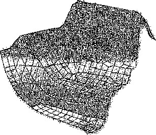

深入理解计算机系统
!、 1 Randal K. Hr>ant I)a\id K. O'Hallaron
C OMPUTER S YSTEMS
A Programmers Perspective

Bryant - O’Hallaron
::Computer Systems 丨: A Programmer’s Perspective
Second Edition
(T) 机械工业出版社 i
\u China Machine Press
本书从程序员的视角详细阐述计算机系统的本质概念，并展示这些概念如何实实在在地影响应用程序的 正确性、性能和实用性。全书共12章，主要内容包括信息的表示和处理、程序的机器级表示、处理器体系结 构、优化程序性能、存储器层次结构、链接、异常控制流、虚拟存储器、系统级1/0、网络编程、并发编程 等。书中提供了大量的例子和练习题，并给出部分答案，有助于读者加深对正文所述概念和知识的理解。
本书适合作为高等院校计算机及相关专业本科生、研究生的教材，也可供想要写出更快、更可靠程序 的程序员及专业技术人员参考。
Simplified Chinese edition copyright © 2011 by Pearson Education Asia Limited and China Machine Press. Original English language title: Computer Systems ： A Programmer's Perspective, Second Edition (ISBN 978-0-13-610804-7) by Randal E. Bryant and David R. O' Hallaron, Copyright © 2011,2003.
All rights reserved.
Published by arrangement with the original publisher, Pearson Education, Inc., publishing as Prentice Hall. 本书封面贴有Pearson Education (培生教育出版集团）激光防伪标签，无标签者不得销售。
封底无防伪标均为盗版
版权所有，侵权必究
本书法律顾问北京市展达律师事务所
本书版权登记号：图字：01-2010-2048 图书在版编目（CIP)数据
深人理解计算机系统（原书第2版）/ (美）布莱恩特（Bryant, R.E.),奥哈拉伦（O’Hanaron, D.R.) 著；龚奕利，雷迎春译.一北京：机械工业出版社，2010.11 (计算机科学丛书）
书名原文：Computer Systems : A Programmer's Perspective, Second Edition ISBN 978-7-111-32133-0
1 .深… n.①布…②奥…③龚…④雷…m.计算机系统IV.TP30
中国版本图书馆CIP数据核字（2010)第198285号
机械工业出版社（北京市西城区百万庄大街 22 号邮政编码 100037)
责任编辑：李俊竹白宇 北京瑞德印刷有限公司印刷 2011年1月第1版第2次印刷 185mmX260mm• 45.5 印张 标准书号：ISBN 978-7-111-32133-0 定价：99.00元
凡购本书，如有缺页、倒页、脱页，由本社发行部调换 客服热线：(010) 88378991 ； 88361066 购书热线：(010) 68326294 ； 88379649 ； 68995259 投稿热线：（010) 88379604 读者信箱： hzjsj@hzbook.com
I 出版者的话
Computer Systems ： A Programmer’s Perspective, 2E
文艺复兴以降，源远流长的科学精神和逐步形成的学术规范，使西方国家在自然科学的各个 领域取得了垄断性的优势；也正是这样的传统，使美国在信息技术发展的六十多年间名家辈出、 独领风骚。在商业化的进程中，美国的产业界与教育界越来越紧密地结合，计算机学科中的许多 泰山北斗同时身处科研和教学的最前线，由此而产生的经典科学著作，不仅擘划了研究的范畴, 还揭示了学术的源变，既遵循学术规范，又自有学者个性，其价值并不会因年月的流逝而减退。
近年，在全球信息化大潮的推动下，我国的计算机产业发展迅猛，对专业人才的需求日益迫 切。这对计算机教育界和出版界都既是机遇，也是挑战；而专业教材的建设在教育战略上显得举 足轻重。在我国信息技术发展时间较短的现状下，美国等发达国家在其计算机科学发展的几十年 间积淀和发展的经典教材仍有许多值得借鉴之处。因此，引进一批国外优秀计算机教材将对我国 计算机教育事业的发展起到积极的推动作用，也是与世界接轨、建设真正的世界一流大学的必由 之路。
机械工业出版社华章公司较早意识到“出版要为教育服务”。自1998年开始，我们就将工作 重点放在了遴选、移译国外优秀教材上。经过多年的不懈努力，我们与Pearson，McGraw-Hill, Elsevier, MIT, John Wiley & Sons, Cengage等世界著名出版公司建立了良好的合作关系，从 他们现有的数百种教材中甄选出 Andrew S. Tanenbaum, Bjame Stroustrup, Brain W. Kemighan, Dennis Ritchie, Jim Gray, Afred V. Aho, John E. Hopcroft, Jeffrey D. Ullman, Abraham Silberschatz, William Stallings, Donald E. Knuth, John L. Hennessy, Larry L. Peterson 等大师名 家的一批经典作品，以“计算机科学丛书”为总称出版，供读者学习、研究及珍藏。大理石纹理 的封面，也正体现了这套丛书的品位和格调。
“计算机科学丛书”的出版工作得到了国内外学者的鼎力襄助，国内的专家不仅提供了中肯 的选题指导，还不辞劳苦地担任了翻译和审校的工作；而原书的作者也相当关注其作品在中国的 传播，有的还专程为其书的中译本作序。迄今，“计算机科学丛书”已经出版了近两百个品种, 这些书籍在读者中树立了良好的口碑，并被许多高校采用为正式教材和参考书籍。其影印版“经 典原版书库”作为姊妹篇也被越来越多实施双语教学的学校所采用》
权威的作者、经典的教材、一流的译者、严格的审校、精细的编辑，这些因素使我们的图书 有了质量的保证。随着计算机科学与技术专业学科建设的不断完善和教材改革的逐渐深化，教育 界对国外计算机教材的需求和应用都将步入一个新的阶段，我们的目标是尽善尽美，而反馈的意 见正是我们达到这一终极目标的重要帮助。华章公司欢迎老师和读者对我们的工作提出建议或给 予指正，我们的联系方法如下：
华章教育 华章科技图书_出版中心
华章网站：www. hzbook. com 电子邮件：hzjsj@hzbook. com 联系电话：(010) 88379604 联系地址：北京市西城区百万庄南街1号 邮政编码：100037
译者序 I
Computer Systems ： A Programmer * s Perspective, 2E
本书通过程序员的视角来介绍计算机系统，首先把高级语言转换成计算机所能理解的一种中 间格式（如汇编语言)，然后描述计算机如何解释和执行这些中间格式的程序，系统的哪一部分 影响程序的执行效率。在讲述计算机系统知识的同时，也给出了关于c语言和汇编语言的编程、 阅读技巧以及基本的系统编程工具，还给出一些方法帮助程序员基于对计算机系统的理解来改善 程序的性能等问题。本书强调对计算机系统概念的理解，但并不意味着不动手。如果按照本书的 安排做每一章后面的习题，将有助于加深对正文所述概念和知识的理解，更可以从实际动手中学 习到新的知识。
本书的主要内容是关于计算机体系结构与编译器和操作系统的交互，包括：数据表示，汇编 语言和汇编级计算机体系结构，处理器设计，程序的性能度量和优化，程序的加载器、链接器和 编译器，i/o和设备的存储器层次结构，虚拟存储器，外部存储管理，中断、信号和进程控制。
本书的最大优点是为程序员描述计算机系统的实现细节，帮助其在大脑中构造一个层次型的 计算机系统，从最底层的数据在内存中的表示（如大多数程序员一直陌生或疑惑的浮点数表示)， 到流水线指令的构成，到虚拟存储器，到编译系统，到动态加载库，到最后的用户态应用。贯串 本书的一条主线是使程序员在设计程序时，能充分意识到计算机系统的重要性，建立起所写程序 可能被执行的数据或指令流图，明白执行程序时到底发生了什么事，从而能设计出高效、可移 植、健壮的程序，并能够更快地对程序排错、改进程序性能等。
原书是卡内基-梅隆大学（CMU)的教材，现在很多国内外著名的大学也选用其作为教材 或辅助性资料，因此，本书的读者不仅仅是那些因为工作和兴趣而关注本书的人，还包JS—些在 校的大学生。我们认为，在校学生越早接触本书的内容，将越有利于他们学习计算机~的相关课 程，培养对计算机系统的研究兴趣。
总的来说，本书是一座桥梁，它帮助程序员衔接了计算机系统各个领域的知识，为程序员构 造了一个概念性框架。要想获取更多关于计算机系统结构、操作系统、编译器、网络、并发编程 方面的知识，还需要进一步阅读相关书籍。
本书第2版距第1版出版已有7年时间了。由于计算机技术的飞速发展，第2版相对于第1 版做了大量的修改。首先，针对硬件技术和编译器技术的变化，第2版对系统的介绍，特别是实 际使用部分，做了增加和修改。例如，既保持了原有的针对32位系统的说明，又增加了对64位 系统的描述。其次，第2版增加了很多关于由算术运算溢出以及缓冲区溢出造成安全漏洞的内 容。第三，更详细地讲述了处理器对异常的发现和处理，这是计算机系统中的一个重点和难点。 第四，对存储器的描述改为了基于Intel Core i7处理器的存储器层次结构，还增加了固态硬盘的 内容。第五，强调了并发性，并发性既体现在处理器的实现中，也体现在应用程序编程中。
这次我们不仅对第2版较第1版有改动之处做了仔细的翻译，而且对第1版的译稿做了重新 审视和校正，更加精益求精。比如，在保证原意正确的情况下，对一些句式做了变动，尽量减少 被动语态的使用等，以符合中国人的阅读习惯。再如，根据我们这几年教授“计算机体系结构” 课程的经验，改变了某些术语的翻译，使之更接近于中文教科书中的术语使用。
本书中有些术语的翻译还是让我们难以抉择。在此，我们预先做一些解释和说明。operator 这个词，如果根据上下文，它表示的是一个运算，我们就翻译成运算符；如果它对应于一个操 作，我们就翻译成操作符。local variable，可以翻译成局部变量，也可以翻译成本地变量。考虑 到还有local data、local buffer等词，我们选择统一将local翻译成“局部的”。chunk这个词是一 片或者一块的意思，常常用来表示一块连续的内存区域。它在第6章、第7章和第9章中出现较 多，为了使之区别于block (块)，我们选择将其翻译成“片”。
本书主要由龚奕利和雷迎春负责翻译完成。此外，刘晓文、李晓玲、邱文卓和张育也参与 了翻译和校对工作。在此，还要感谢王文杰，他经常和我们一起讨论翻译中遇到的问题。
由于本书内容较多，翻译时间紧迫，尽管我们尽量做到认真仔细，但还是难以避免出现错误 和不尽如人意的地方。在此欢迎广大读者批评指正，我们也会把勘误表及时在网上更新，便于大 家阅读。 .
龚奕利雷迎春 2010年9月于珞伽山
前言丨
Computer Systems ： A Programmer^ Perspective, 2E
本书的主要读者是计算机科学家、计算机工程师，以及那些想通过学习计算机系统的内在运 作而能够写出更好程序的人。
我们的目的是解释所有计算机系统的本质概念，并向你展示这些概念是如何实实在在地影响 应用程序的正确性、性能和实用性的。其他的系统类书籍都是从构建者的角度来写的，讲述如何 实现硬件或是系统软件，包括操作系统、编译器和网络接口。而本书是从程序员的角度来写的， 讲述应用程序员如何能够利用系统知识来编写出更好的程序。当然，学习一个计算机系统应该做 些什么，是学习如何构建一个计算机系统的很好的出发点，所以，对于希望继续学习系统软硬件 实现的人来说，本书也是一本很有价值的介绍性读物。
如果你研究和领会了这本书里的概念，你将开始成为极少数的“牛人”，这些“牛人”知道 事情是如何运作的，也知道当事情出现故障时如何修复。我们的目标是以一种你会立刻发现很有 用的方式来呈现这些基本概念。同时，你也要做好更深人探究的准备，研究像编译器、计算机体 系结构、操作系统、嵌人式系统和网络互联这样的题目。
读者所应具备的背景知识
本书中的机器代码表示是基于英特尔及其竞争者支持的两种相关联的格式，俗称“x86”。对 于很多系统来说，IA32机器代码已经成为一种事实上的标准。X86-64是IA32的一种扩展，它 允许程序操作更多的数据，引用更广范围的内存地址。由于X86-64系统可以运行IA32的代码， 因而在可预见的未来，这商种格式的机器代码都会得到广泛的应用。我们考虑的是这些机器如 何在Unix或类Unk (比如Linux)操作系统上运行C语言程序。（为了简化表述，我们用术语 Unix来统称所有继承自Unix的系统，包括Solaris、Mac OS和Linux在内。）文中包含大量已在 Linux系统上编译和运行过的程序范例。我们假设你能访问一台这样的机器，并且能够登录，能 够做一些诸如切换目录之类的简单操作。
如果你的计算机运行的是Microsoft Windows系统，你有两种选择：一种是获取一个Linux 的拷贝（参见www.ubuntu.com)，然后安装Linux作为“双重启动”的一个选项，这样你的 机器就能运行其中任意一个操作系统了 ；另一种是通过安装Cygwin工具(www.cygwin.com),你 就能在Windows下得到一个类似Unix的外壳（shell)以及一个非常类似于Linux所提供的环 境。不过，Cygwin并不能提供所有的Linux功能。
我们还假设你对C和C++有一定的了解。如果你以前只有Java经验，那么你需要付出更多 的努力来完成这种转换，不过我们也会帮助你。Java和C有相似的语法和控制语句。不过，有 一些C语言的内容，特别是指针、显式的动态内存分配和格式化I/O, Java中都是没有的。所幸 的是，C是一个较小的语言，在Brian Kemighan和Dennis Ritchie经典的“K&R”文献中得到了 清晰优美的描述[58]。无论你的编程背景如何，都应该考虑将K&R作为你个人系统书籍收藏的 部分■»
这本书的前几章揭示了 C语言程序和它们相对应的机器语言程序之间的交互作用。机器语 言示例都是用运行在IA32和X86-64处理器上的GNU GCC编译器生成的。我们不需要你以前有
任何硬件、机器语言或是汇编语言编程的经验。
C语言初学者 ： 关于C编程语言的建议
为了帮助C语言编程背景薄弱（或全无背景）的读者，我们在书中加入了这样一些专门的 注释来突出C中一些特别重要的特性。我们假设你熟悉C++或Java。
如何阅读此书
从程序员的角度来学习计算机系统是如何工作的会非常有趣，主要是因为你可以主动地来做 这件事情。无论何时你学到一些新的东西，都可以马上试验并且直接看到运行结果。事实上，我 们相信学习系统的唯一方法就是做(do)系统，即在真正的系统上解决具体的问题 ， 或是编写和 运行程序。
这个主题观念贯穿全书。当引入一个新概念时 ， 将会有一个或多个练习题紧随其后 ， 你应该 马上做一做来检验你的理解。这些练习题的解答在每章的末尾。当你阅读时，尝试自己来解答每 个问题 ， 然后再査阅答案，看看自己的答案是否正确。每一章后面都有一组难度不同的家庭作业 題。对每个家庭作业题，我们标注了难度级别：
*只需要几分钟。几乎或完全不需要编程。
**可能需要将近20分钟。通常包括编写和测试一些代码，许多都源自我们在考试中出的 题目。
V需要很大的努力，也许是1〜2个小时。一般包括编写和测试大量的代码。
n —个实验作业，需要将近10个小时。
书中每段代码示例都是经过GCC编译并在Limix系统上测试后直接生成的，没有任何人为 的改动。当然，你的系统上GCC的版本可能不同，或者根本就是另外一种编译器，那么可能生 成不一样的机器代码，但是整体行为表现应该是一样的。所有的源程序代码都可以从CS:APP的 主页（csappxs.cmu.edu)上获取。在本书中，源程序的文件名列在两条水平线的右边，水平线 之间是格式化的代码。比如，图1中的程序能在code/intro/目录下的hellox文件中找到。当遇 到这些示例程序时，我们鼓励你在自己的系统上试试运行它们。
code/intro/hello. c
#include <stdio.h>
2
int mainO
{
printf("hello, world\n");
return 0;
}
code/intro/hello. c
图i 一个典型的代码示例
为了避免使本书体积过大，内容过多，我们创建了许多网络旁注（Web aside),包括一些对 本书主要内容的补充资料。.本书中用CHAP:T0P这样形式的标记来引用这些旁注，这里CHAP 是该章主题的一个缩写编码，而TOP是涉及的话题的缩写代码。例如，网络旁注DATA:B00L 包含有对第2章中数据表示里面有关布尔代数的内容的补充资料 ； 而网络旁注ARCH:VL0G包 含的是用Verilog硬件描述语言来做处理器设计的资料，是对第4章中处理器设计部分的补充。 所有的网络旁注都可以从CS:APP的主页上获取。
什么是旁注？
在整本书中，你将会遇到很多以加框形式出现的旁注。旁注是附加说明，能使你对当前讨 论的主题.多一些了解。旁注可以有很多用处。一些是小的历史故事。例如，C语言、Linux和 Internet是从何而来的？有些旁注是用来澄清学生们经常感到疑惑的问题。例如，高速缓存的行、 组和块有什么区别？还有的旁注给出了一些现实世界的例子。例如，一个浮点錯误怎么毁掉了法 国的一枚火箭，或者是一个真正的希捷磁盘驱动器看上去是什么样子的。最后，还有一些旁注仅 仅就是一些有趣的内容，例如什么是“hoinky” ?
本书概述
本书由12章组成，旨在阐述计算机系统的核心概念。
•第1章：计算机系统漫游。这一章通过研究“hello, world”这个简单程序的生命周期，介 绍计算机系统的主要概念和主题。
•第2章：信息的表示和处理。我们讲述了计算机的算术运算，重点描述了会对程序员有影 响的无符号数和数的二进制补码（two’s complement)表示的特性。我们考虑数字是如何 表示的，以及由此确定对于一个给定的字长，其可能编码值的范围。我们讨论该如何表示 数字，以及因此用给定的字长能编码的数值的范围。我们探讨有符号和无符号数字之间类 型转换的效果，还阐述算术运算的数学特性。菜鸟级程序员经常很捧奇地了解到（用二进 制补码表示的）两个正数的和或者积可能为负。另一方面，二进制补码的算术运算满足代 数环的特性，因此，编译器可以根安全地把一个常量乘法转4b为一系列的移位和加法。我 们用C语言的位级操作来说明布尔代数的原理和应用。我们从两个方面讲述了 IEEE标准 的浮点格式：一是如何用它来表示数值，一是浮点运算的数学属性。
对计算机的算术运算有深刻的理解是写出可靠程序的关键。比如，程序员和编译器不能用 表达式（x-y<0)来替代（x<y),因为前者可能会产生溢出。甚至于也不能用表达式（-y<-x) 来替代，因为在二进制补码表示中负数和正数的范围是不对称的。算术溢出是造成程序错误和安 全漏洞的一个常见根源，然而很少有书从一个程序员的角度来讲述计算机算术运算的特性。
•第3章：程序的机器级表示。我们教读者如何阅读由C编译器生成的IA32和X86-64汇编 语言。我们说明为不同控制结构，比如条件、循环和开关语句，生成的基本指令模式。我 们还讲述过程的执行，包括栈分配、寄存器使用惯例和参数传递。我们讨论不同数据结构 (如结构、联合（union)和数组）的分配和访问方式。我们还以分析程序在机器级的样子 作为途径，来理解常见的代码安全漏洞，例如，.缓冲区溢出，以及理解程序员、编译器和 操作系统可以采取的减轻这些威胁的措施。学习本章的概念能够帮助读者成为更好的程序 员，因为你们懂得程序在机器上是如何表示的。另外一个好处就在于读者会对指针有非常 全面而具体的理解。
第4章：处理器体系结构。这一章讲述基本的组合和时序逻辑元素，并展示这些元素如 何在数据通路（datapath)中组合到一起来执行IA32指令集的一个称为“Y86”的简化子 集。我们从设计单时钟周期、非流水线化的数据通路开始，这个设计概念上非常简单，但 是运行速度不会太快。然后我们引入流水线化（pipelining)的思想，将处理一条指令所需 要的不同步骤实现为独立的阶段。这个设计中，在任何时刻，每个阶段都可以处理不同的 指令。我们的五阶段处理器流水线更加实用。本章中处理器设计的控制逻辑是用一种称为 HCL的简单硬件描述语言来描述的。用HCL写的硬件设计能够编译和链接到本书提供的 模拟器中，还可以根据这些设计生成Verilog描述，它适合合成（synthesis)到实际可以运 行的硬件上去。
•第5章：优化程序性能。在这一章里，我们介绍了许多提高代码性能的技术，主要思想就 是让程序员通过使编译器能够生成更有效的机器代码来学习编写C代码。我们一开始介绍 的是减少程序需要做的工作的变换，这些是在任何机器上写任何程序时都应该遵循的。然 后讲的是增加生成的机器代码中指令级并行度的变换，因而提高了程序在现代“超标量” (superscalar)处理器上的性能。为了解释这些变换行之有效的原理，我们介绍了一个简单 的操作模型，它描述了现代乱序（out-of-order)处理器是如何工作的，然后给出了如何根 据一个程序的图形化表示中的关键路径来测量一个程序可能的性能。你会惊讶于对C代码 做一些简单的变换能给程序带来多大的速度提升。
•第6章：存储器层次结构。对应用程序员来说，存储器系统是计算机系统中最直接可见的 部分之一。到目前为止，读者一直认同这样一个存储器系统概念模型，认为它是一个有 一致访问时间的线性数组。实际上，存储器系统是一个由不同容量、造价和访问时间的 存储设备组成的层次结构。我们讲述不同类型的随机存取存储器（RAM)和只读存储器 (ROM),以及磁盘和固态硬盘（译者注：直译应为固态驱动器，但固态硬盘一词已经被大 家接受，所以延用）的几何形状和组织构造。我们描述这些存储设备是如何放置在层次结 构中的，讲述访问局部性是如何使这种层次结构成为可能的。我们通过一个独特的观点使 这些理论具体化、形象化，那就是将存储器系统视为一个“存储器山”，山脊是时间局部 性，而斜坡是空间局部性。最后，我们向读者阐述如何通过改善程序的时间局部性和空间 局部性来提高应用程序的性能。
•第7章：链接。本章讲述静态和动态链接，包括的概念有可重定位的（relocatable)和可执 行的目标文件、符号解析、重定位（relocation)、静态库、共享目标库，以及与位置无关 的代码。大多数讲述系统的书中都不讲链接，我们要讲述它是出于以下原因。第一，程序 员遇到的最令人迷惑的问题中，有一些是和链接时的小故障有关的，尤其是对那些大型软 件包来说。第二，链接器生成的目标文件是与一些像加载、虚拟存储器和存储器映射这样 的概念相关的。
•第8章：异常控制流。在本书的这个部分，我们通过介绍异常控制流（比如，除了正常分支 和过程调用以外的控制流的变化)的一般概念，打破单一程序的模型。我们给出存在于系统 所有层次的异常控制流的例子，从底层的硬件异常和中断，到并发进程的上下文切换，到由 于Unix信号传送引起的控制流突变，到C语言中破坏栈原则的非本地跳转（nonlocaljump)。
在这一章，我们介绍进程的基本概念，进程是对一个正在执行的程序的一种抽象。读者会学 习到进程是如何工作的，以及如何在应用程序中创建和操纵进程。我们会展示应用程序员如何通 过Unix系统调用来使用多个进程。学完本章之后，读者就能够编写带作业控制的Unix外壳了。 同时，这里也会向读者初步展示程序的并发执行会引起不确定的行为和后果。
•第9章：虚拟存储器。我们讲述虚拟存储器系统是希望读者对它是如何工作的以及它的特 性有所了解。我们想让读者了解为什么不同的并发进程各自都有一个完全相同的地址范 围，能共享某些页，而又独占另外一些页。我们还覆盖讲了一些管理和操纵虚拟存储器的 问题。特别地，我们讨论了存储分配操作，就像Unix的malloc和free操作。阐述这 些内容是出于下面几个目的。它加强了这样一个概念，那就是虛拟存储器空间只是一个字 节数组，程序可以把它划分成不同的存储单元。它帮助读者理解包含像存储泄漏和非法指 针引用这样的存储器引用错误的程序的后果。最后，许多应用程序员编写自己的优化了的 存储分配操作来满足应用程序的需要和特性。这一章比其他任何一章都更能展现将计算机 系统中的硬件和软件结合起来阐述的优点。而传统的计算机体系结构和操作系统书籍都只 讲述虚拟存储器的某一方面。
•第10章：系统级I/O。我们讲述Unix I/O的基本概念，例如文件和描述符。我们描述如何 共享文件，I/O重定向是如何工作的，还有如何访问文件的元数据。我们还开发了一个健 壮的带缓冲区的I/O包，可以正确处理一种称为short counts的奇特行为，也就是库函数 只读取一部分的输入数据。我们阐述C的标准I/O库，以及它与Unix I/O的关系，重点谈 到标准I/O的局限性，这些局限性使之不适合网络编程。总的说来，本章的论题是后面两 章 ^网络和并发编程的基础。
•第11章：网络编程。对编程而言，网络是非常有趣的I/O设备，将许多我们前面文中学习 的概念，比如进程、信号、字节顺序（byte order),存储器映射和动态存储器分配，联系 在一起。网络程序还为下一章的主题——并发，提供了一个很令人信服的上下文。本章只 是网络编程的一个很小的部分，使读者能够编写一个Web服务器。我们还讲述了位于所有 网络程序底层的客户端-服务器模型。我们展现了一个程序员对Internet的观点，并且教 读者如何用套接字（socket)接口来编写Internet客户端和服务器。最后，我们介绍超文本 传输协议HTTP，并开发了一个简单的迭代式（iterative) Web服务器。
•第12章：并发编程。这一章以Internet服务器设计为例介绍了并发编程。我们比较对照了 三种编写并发程序的基本机制（进程、I/O多路复用技术和线程)，并且展示如何用它们来 建造并发Internet服务器。我们探讨了用P、F信号操作来实现同步、线程安全和可重入 (reentrancy).竞争条件以及死锁等的基本原则。对大多数服务器应用来说，写并发代码都 是很关键的。我们还讲述了线程级编程的使用方法，来解释应用程序中的并行性，使得程 序在多核的处理器上能执行得更快。使所有的核来解决同一个计算问题需要很小心谨慎地 协调并发的线程，既要保证正确性，又要争取获得高性能。
本版新增内容
本书的第1版于2003年出版。考虑到计算机技术发展如此迅速，这本书的内容还算是保持 得很好。事实证明Intel x86的机器上运行类Unix操作系统，加上采用C语言编程，是一种能够 涵盖当今许多系统的组合。硬件技术和编译器的变化，以及很多教师教授这些内容的经验，都促 使我们做了大量的修改。
下面列出的是一些更加详细的改进：
•第2章：信息的表示和处理。通过更加详细地解释概念以及更多的练习题和家庭作业，我 们试图使这部分内容更加易懂。我们将一些比较偏理论的内容放到了网络旁注里。还讲述 了一些由于计算机算术运算的溢出造成的安全漏洞。
•第3章：程序的机器级表示。我们将内容的覆盖范围扩展到了包括X86-64，也就是将x86 处理器扩展到了 64位字长。也使用了更新版本的GCC产生的代码。另外还增强了对缓冲 区溢出漏洞的描述。在网络旁注里，我们给出了两类不同的浮点指令，还介绍了当编译器 试图做更高等级优化的时候，做的一些奇特的变换。另外，还有一个网络旁注描述了如何 在一个C语言程序中嵌入x86汇编代码。
•第4章：处理器体系结构。更加详细地说明了我们的处理器设计中的异常发现和处理。在
网络旁注里，我们也给出了处理器设计的Verilog描述映射，使得我们的设计能够合成到 可运行的硬件上。
•第5章：优化程序性能。我们极大地改变了对乱序处理器如何运行的描述，还提出了一种 简单的技术，能够基于程序的数据流图表示中的路径来分析程序的性能。在网络旁注里， 描述了 C语言程序员如何能够利用较新的x86处理器中提供的SIMD (单指令流，多数据 流）指令来编程。
•第6章：存储器层次结构。我们增加了固态硬盘的内容，还更新了我们的表述，使之基于 Intel Core i7处理器的存储器层次结构。
•第7章：链接。本章的变化不大。
•第8章：异常控制流。我们改进了对于进程模型如何引人一些基本的并发概念的讨论，例 如非确定性。
•第9章：虚拟存储器。我们更新了存储器系统案例研究，采用了 64位Intel Core i7处理器 为例来讲述。我们还更新了 malloc函数的示例实现，使之既能在32位也能在64位环境 中执行。
.第10章：系统级I/O。本章的变化不大。
•第11章：网络编程。本章的变化不大。
•第12章：并发编程。我们增加了关于并发性一般原则的内容，还讲述了程序员如何利用 线程级并行性使得程序在多核机器上能运行得更快。
此外，我们还增加和修改了很多练习题和家庭作业。
本书的起源
本书起源于1998年秋季，我们在卡内基-梅隆（CMU)大学开设的一门编号为15-213的 介绍性课程：计算机系统导论（Introduction to Computer Systems, ICS) [14]。从那以后，每学 期都开设了 ICS这门课程，每期有150〜250名学生，从本科二年级到硕士研究生都有，所学 专业也很广泛。这门课程是卡内基-梅隆大学计算机科学系（CS)以及电子和计算机工程系 (ECE)所有本科生的必修课，也是大多数髙级系统课程的先行必修课。
ICS这门课程的宗旨是用一种不同的方式向学生介绍计算机。因为，我们的学生中几乎没有 人有机会亲自去构造一个计算机系统。另一方面，大多数学生，甚至包括所有的计算机科学家和 计算机工程师，也需要日常使用计算机和编写计算机程序。所以我们决定从程序员的角度来讲解 系统，并采用这样的原则来过滤要讲述的内容：我们只讨论那些影响用户级C语言程序的性能、 正确性或实用性的主题。
比如，我们排除了诸如硬件加法器和总线设计这样的主题。虽然我们谈及了机器语言，但是 重点并不在于如何手工编写汇编语言，而是关注C语言编译器是如何将C语言的结构翻译成机 器代码的，包括编译器是如何翻译指针、循环、过程调用以及开关（switch)语句的。更进一步 地，我们将更广泛和全盘地看待系统，包括硬件和系统软件，涵盖了包括链接、加载、进程、信 号、性能优化、虚拟存储器、I/O以及网络与并发编程等在内的主题。
这种做法使得我们讲授ICS课程的方式对学生来讲既实用、具体，还能动手操作，同时也非常 能调动学生的积极性。很快地，我们收到来自学生和教职工非常热烈而积极的反响，我们意识到卡 内基-梅隆大学以外的其他人也可以从我们的方法中获益。因此，这本书从ICS课程的笔记中应运 而生了，而现在我们对它做了修改，使之能够反映科学技术以及计算机系统实现中的变化和进步。
写给指导教师们：可以基于本书的课程
指导教师可以使用本书来讲授五种不同类型的系统课程（见图2)。具体每门课程则有赖于 课程大纲的要求、个人品位、学生的背景和能力。图中的课程从左往右越来越强调以程序员的角 度来看待系统。以下是简单的描述：
•ORG:—门以非传统风格讲述传统主题的计算机组成原理课程。传统的主题包括逻辑设 计、处理器体系结构、汇编语言和存储器系统，然而更多地强调对程序员的影响。例如， 要反过来考虑数据表示对C语言程序的数据类型和操作的影响。又例如，使用的汇编代码 表示是基于C语言编译器产生机器代码的，而不是手工编写的。
•ORG+:—门特别强调硬件对应用程序性能影响的ORG课程。和ORG课程相比，学生要 更多地学习代码优化和改进他们的C语言程序的存储器性能。
•ICS:基本的ICS课程，旨在培养一类程序员，他们能够理解硬件、操作系统和编译系统 对应用程序的性能和正确性的影响，和ORG+课程的一个显著不同是，本课程不论及低层 次的处理器体系结构。相反地，程序员只同现代乱序处理器的高级模型打交道。ICS课程 非常适合安排到一个10周的小学期，如果期望步调更从容一些，也可以延长到一个15周 的学期。
ICS+:在基本的ICS课程基神上，额外论述一些系统编程的问题，比如系统级I/O、网络 编程和并发编程。这是卡内梅隆大学的一门一个学期长度的课程，会讲述本书中除了 低级处理器体系结构以外的所有章节。
•SP:—门系统编程课程。和ICS+课程相似，但是剔除了浮点和性能优化的内容，更加强 调系统编程，包括进程控制、动态链接、系统级I/O、网络编程和并发编程。指导教师可 能会想从其他渠道对某些高级论题做些补充，比如守护进程(daemon),终端控制和Unix IPC (进程间通信）。
章节 |
论题 |
课程 |
||||
ORG |
ORG+ |
ICS |
ICS+ |
SP |
||
1 |
系统漫游 |
|||||
2 |
数据表示 |
參 |
參 |
• |
參 |
0 (d) |
3 |
机器语言 |
|||||
4 |
处理器体系结构 |
• |
• |
|||
5 |
代码优化 |
參 |
• |
參 |
||
6 |
存储器层次结构 |
o( a ) |
• |
• |
• |
d ⑷ |
7 |
链接 |
0 ( c ) |
G (c) |
• |
||
8 |
异常控制流 |
參 |
• |
• |
||
9 |
虚拟存储器 |
0 (b) |
• |
• |
• |
• |
10 |
系统级i/o |
參 |
參 |
|||
11 |
网络编程 |
• |
參 |
|||
12 |
并发编程 |
參 |
• |
|||
图2五类基于本书的课程 注 ：（a) 只有硬件； （b) 无动态存储分配； （c) 无动态链接； （d) 无浮点数； ICS+ 是卡内基—梅隆的 15-213 课在。
图2要表达的主要信息是本书给了学生和指导教师多种选择。如果你希望学生更多地了解 低层次的处理器体系结构，那么通过ORG和ORG+课程可以达到目的。另一方面，如果你想将
xni
当前的计算机组成原理课程转换成ICS或者ICS+课程，但是又担心突然做这样剧烈的变化，'那 么你可以逐步递增转向ICS课程。你可以从ORG课程开始，它以一种非传统的方式教授传统的 问题。一旦你对这些内容感到驾轻就熟了，就可以转到ORG+，最终转到ICS。如果学生没有C 语言的经验（比如他们只用Java编写过程序），你可以花几周的时间在C语言上，然后再讲述 ORG或者ICS课程的内容。
最后，我们认为ORG+和SP课程适合安排为两学期（两个小学期或者两个学期）o或者你 可以考虑按照一学期ICS和一学期SP的方式来教授ICS+课程。
经过课堂验证的实验练习
ICS+课程在卡内基-梅隆大学得到了学生们很髙的评价。学生对这门课程的评价，中值分f一 般为5.0/5.0，平均分数一般为4.6/5.0。学生们说这门课非常有趣，令人兴奋，主要就是因为相关的 实验练习。这些实验练习可以从CS: APP的主页上获得。下面是本书提供的一些实验的示例。
•数据实验。这个实验要求学生实现简单的逻辑和算术运算函数，但是只能使用一个非常有 限的C语言子集。比如，他们只能用位级操作来计算一个数字的绝对值。这个实验帮助学 生们了解C语言数据类型的位级表示，以及数据操作的位级行为。
•二进制炸弹实验。二进制炸弹是一个作为目标代码文件提供给学生们的程序。运行时，它 提示用户输入6个不同的字符串。如果其中的任何一个不正确，炸弹就会“爆炸”，打印 出一条错误信息，并且在一个分级(grading)服务器上记录事件日志。学生们必须通过对 程序反汇编和逆向工程来测定应该是哪6个串，从而解除他们各自炸弹的雷管。该实验教 会学生理解汇编语言，并且强制他们学习怎样使用调试器。
•缓冲区溢出实验。它要求学生们通过利用一个缓冲区溢出漏洞，来修改一个二进制可执行 文件的运行时行为。这个实验教会学生们栈的原理，并让他们了解到写那种易于遭受缓冲 区溢出攻击的代码的危险性。
•体系结构实验。第4章的几个家庭作业问题能够组合成一个实验作业。在实验中，学生们 修改处理器的HCL描述，增加新的指令、修改分支预测策略，或者增加或删除旁路路径 和寄存器端口。修改后的处理器能够被模拟，并通过运行自动化测试检测出大多数可能的 错误。这个实验使学生们能体验到处理器设计中令人激动的部分，而不需要掌握逻辑设计 和硬件描述语言的完整的知识。
•性能实验。学生们必须优化应用程序的核心函数（比如卷积积分或矩阵转置）的性能。这 个实验非常清晰地表明了髙速缓存的特性，并带给学生们低级程序优化的经验。
•外壳实验。学生们实现他们自己的带有作业控制的Unix外壳程序，包括ctrl-c和 ctrl-z按键、fg、bg和jobs命令。这是学生们第一次接触并发，并且让他们对Unix 的进程控制、信号和信号处理有清晰的了解。
•malloc实验。学生们实现他们自己的malloc、free和realloc (可选的）版本。这 个实验让学生们清晰地理解数据的布局和组织，并且要求他们评估时间和空间效率的各种 权衡和折中。
•代理实验。学生们实现一个位于浏览器和万维网其他部分之间的并行Web代理。这个实 验向学生们揭示了 Web客户端和服务器这样的主题，并且把课程中的许多概念联系起来， 比如字节排序、文件I/O、进程控制、信号、信号处理、存储器映射、套接字和并发。学 .生们很高兴能够看到他们的程序在真实的Web浏览器和Web服务器之间起到作用。
第 2 版的致谢
我们深深地感谢那些帮助我们写出CS: APP第2版的人们。
首先，我们要感谢在卡内基-梅隆大学教授ICS课程的同事们，感谢你们见解深刻的反馈意 见和鼓励：Guy Blelloch、Roger Dannenberg、David Eckhardt、Greg Ganger、Seth GoldstQin、Greg Kesden、Bruce Maggs、ToddMowry、Andreas Nowatzyk、Frank Pfenning 和 MarkusPueschel。
还要感谢报告第1版勘误的目光敏锐的读者们：Daniel Amelang、Rui Baptista、Quarup Barreirinhas、Michael Bombyk、Jorg Brauer、Jordan Brough、Yixin Cao、James Caroll、Rui Carvalho、Hyoung-Kee Choi、A1 Davis、Grant Davis、Christian Dufour、Mao Fan、Tim Freeman、 Inge Frick、Max Gebhardt、Jeff Goldblat、Thomas Gross、Anita Gupta、John Hampton、Hiep Hong、Greg Israelsen、Ronald Jones、HaudyKazemi、Brian Kell、Constantine Kousoulis、Sacha Krakowiak、Arun Krishnaswamy、Martin Kulas、Michael Li、Zeyang Li、Ricky Liu、Mario Lo Conte、Dirk Maas、Devon Macey、Carl Marcinik、Will Marrero、Simone Martins、Tao Men、 Mark Morrissey、Venkata Naidu、Bhas Nalabothula、Thomas Niemann、Eric Peskin、David Po、Anne Rogers、John Ross、Michael Scott、Seiki、Ray Shih、Darren Shultz、Erik Silkensen、 Suryanto、Emil Tarazi、Nawanan The era-Ampompunt N Joe Trdinich、Michael Trigoboff、James Troup、Martin Vopatek、Alan West、Betsy Wolff、Tim Wong、JamesWoodruff、Scott Wright、 Jackie Xiao、Guanpeng Xu、Qing Xu、Caren Yang、Yin Yongsheng、Wang Yuanxuan、Steven Zhang和Day Zhong。特别感谢Inge Frick,他发现了我们加锁拷贝（lock-and-copy)例子中一个 极不明显但很深刻的错误，还要特别感谢RickyLiu，他校对的技术真的很棒。
我们Intel实验室的同事Andrew Chien和Limor Fix在本书的写作过程中一直非常支持。非 常感谢Steve Schlosser提供了一些关于磁盘驱动器的总结描述，Casey Helfrich和Michael Ryan 安装并维护了新的Core i7机器。Michael Kozuch、Babu Pillai和Jason Campbell对存储器系统性 能、多核系统和能量墙问题提出了很有价值的见解。Phil Gibbons和Shimin Chen跟我们分享了 大量关于固态硬盘设计的专业知识。
我们还有机会邀请了 Wen-Mei Hwu、Markus Pueschel和Jiri Simsa这样的髙人给予了一些针 对具体问题的意见和高层次的建议。James Hoe帮助我们写了 Y86处理器的Verilog描述，还完 成了所有将设计合成到可运行的硬件上的工作。
非常感谢审阅本书草稿的同事们：James Archibald (百翰杨大学，Brigham Young University)、 Richard Carver (乔治梅森大学，George Mason University) ^ Mirela Damian (维拉诺瓦大学，Vlllanova University)、Peter Dinda (西北大学）、John Fiore (坦普尔大学，Temple University)、Jason Fritts (圣 路易斯大学，StLouis University)、John Greiner (莱斯大学）、Brian Harvey (加州大学伯克利分 校）、Don Heller (宾夕法利亚州立大学）、Wei Chung Hsu (明尼苏达大学）、Michelle Hugue (马 里兰大学）、Jeremy Johnson (德雷克塞尔大学，Drexel University)、Geoff Kuenning (哈维马德学院， Harvey Mudd College)、Ricky Liu、Sam Madden (麻省理工学院）、Fred Martin (马萨诸塞大学洛 厄尔分校，University of Massachusetts, Lowell)、Abraham Matta (波士顿大学）、Markus Pueschel (卡 内基-梅隆大学）、Norman Ramsey (塔夫茨大学，Tufts University)、Glenn Reinmann (加州大学 洛杉矶分校）、Michela Taufer (特拉华大学，University of Delaware)和 Craig Zilles (伊利诺伊大 学香槟分校）。
Windfall软件公司的Paul Anagnostopoulos出色地完成了本书的排版，并领导了制作团队。
非常感谢Paul和他超棒的团队：Rick Camp (文字编辑）、Joe Snowden (排版）、MaryEllenN.01iver (校对)、Laurel Muller (美术）和Ted Laux (索弓丨制作）。
最后，我们要感谢Prentice Hall出版社的朋友们。Marcia Horton总是支持着我们。我们的编辑 MattGoldstein由始至终表现出了一流的领导才能。我们由衷地感谢他们的帮助、鼓励和真知灼见。
第 1 版的致谢
我们衷心地感谢那些给了我们中肯批评和鼓励的众多朋友及同事。特别感谢我们15-213课 種的学生们，他们充满感染力的精力和热情鞭策我们前行。Nick Carter和Vinny Furia无私地提 供了他们的malloc程序包。
Guy Blelloch、Greg Kesden、Bruce Maggs和Todd Mowry在多个学期中教授此课，给我们鼓 励并帮助改进课程内容。Herb Derby提供了早期的精神指导和鼓励。Allan Fisher、Garth Gibson. Thomas Gross、Satya、Peter Steenkiste 和 Hui Zhang 从一开始就鼓励我们开设这门课程。Garth 早期给的建议促使本书的工作得以开展，并且在Allan Fisher领导的小组的帮助下又细化和修订 了本书的工作。Mark Stehlik和Peter Lee提供了极大的支持，使得这些内容成为本科生课程的一 部分。Greg Kesden针对ICS在操作系统课程上的影响提供了有益的反馈意见。Greg Ganger和 Jiri Schindler提供了一些磁盘驱动的描述说明，并回答了我们关于现代磁盘的疑问。Tom Striker 向我们展示了存储器山的比喻。James Hoe在处理器体系结构方面提出了很多有用的建议和反馈。
有一群特殊的学生极大地帮助我们发展了这门课程的内容，他们是Khalil Amiri、Angela Demke Brown > Chris Colohan、Jason Crawford、Peter Dinda、Julio Lopez、Bruce Lowekamp、 Jeff Pierce、Sanjay Rao、Balaji Sarpeshkar、Blake Scholl、Sanjit Seshia、Greg Steffan、Tiankai Tu、Kip Walker和Yinglian Xie。尤其是Chris Colohan建立了愉悦的氛围并持续挺今天，还发明 了传奇般的“二进制炸弹”，这是一个对教授机器语言代码和调试概念非常有用的工具。
Chris Bauer、Alan Cox、Peter Dinda、SandhyaDwarkadis、John Greiner > Bruce Jacob、Barry Johnson > Don Heller、Bruce Lowekamp、Greg Morrisett、Brian Noble、Bobbie Othmer、Bill Pugh、Michael Scott、Mark Smotherman、Greg Steffan 和 Bob Wier 花费了大量时间阅读此书的 早期草稿，并给予我们建议。特别感谢Peter Dinda (西北大学)、John Greiner (莱茨大学)、Wei Hsu (明尼苏达大学)、Bruce Lowekamp (威廉&玛丽大学)、Bobbie Othmer (明尼苏达大学)、 Michael Scott (罗彻斯特大学）和Bob Wier (落基山学院）在教学中测试此书的试用版。同样特 别感谢他们的学生们！
我们还要感谢Prentice Hall出版公司的同事。感谢Marcia Horton、Eric Frank和Harold Stone 不懈的支持和远见。Harold还帮我们提供了对RISC和CISC处理器体系结构准确的历史观点。 JerryRalya有惊人的见识 ， 并教会了我们很多如何写作的知识。
最后，我们衷心感谢伟大的技术作家Brian Kemighan以及后来的W. Richard Stevens,他们
向我们证明了技术书籍也能写得如此优美。
谢谢你们所有的人。
Randy Bryant Dave 0,Hallaron 于匹兹堡，宾夕法尼亚州
关于作者 I
Computer Systems ： A Programmer’s Perspective，2E
Randal E. Bryant 1973 年于密歇根大学（University of Michigan)获得学 士学位，随 即就读于麻省理工学院的研究生院，并在1981年获得计算机博士学位。他在加州理工学院 (California Institute of Technology)做了三年助教，从1984年至今一直任敎于卡内基-梅隆大 学。他现在是计算机科学学院院长、教授。他同时还受邀任教于工学院电子与计算机工程系。
他从事本科生和研究生计算机系统方面课程的教学超过30年。在讲授计算机体系结构课程 多年后，他开始把关注点从如何设计计算机转移到程序员如何在更好地了解系统的情况下编写出 更有效和更可靠的程序。他和O’Hallaron教授一起在卡内基_梅隆大学开设了 “计算机系统导 论”课程，那便是此书的基础。他还教授一些有关算法、编程、计算机网络和VLSI (超大规模 集成电路）设计方面的课程。
Bryant教授的主要研究内容是设计软件工具来帮助软件和硬件设计者验证其系统正确性。其 中，包括几种类型的模拟器，以及用数学方法来证明设计正确性的形式化验证工具。他发表了 150多篇技术论文。包括Intel、FreeScale、IBM和Fujitsu在内的主要计算机制造商都使用着他 的研究成果。他还因他的研究获得过数项大奖。其中包括Semiconductor Research Corporation颁 发的两个发明荣誉奖和一个技术成就奖，ACM颁发的Kanellakis理论与实践奖，还有IEEE颁发 的 W.R.G.Baker 奖、Emmanuel Piore 奖和 Phil Kaufman 奖。他还是 ACM 院士、IEEE 院士和美 国国家工程院,士。
David R. O’Hallaron拥有弗吉尼亚大学计算机科学博士学位，现为Intel匹兹堡实验室主 任，卡内基-梅隆大学计算机科学和电子与计算机工程副教授。
他教授本科生和研究生的计算机系统方面的课程，例如计算机体系结构、计算机系统导论、 并行处理器设计和Internet服务。他和Bryant教授一起开设了 “计算机系统导论”课程，那便是 此书的基础。2004年他获得了卡内基-梅隆大学计算机科学学院颁发的Herbert Simon杰出教学 奖,这个奖项的获得者是基于学生的投票产生的。
O’Hallarcm教授从事计算机系统领域的研究，主要兴趣在于科学计算、数据密集型计算和虚 拟化方面的软件系统。其中最著名的是Quake项目，该项目是一群计算机科学家、土木工程师 和地震学家致力于提高对强烈地震中大地运动的预测能力。2003年，他同Quake项目中其他成 员一起获得了高性能计算领域中的最高国际奖项——Gordon Bell奖。
计算机精品学习资料大放送
软考官方指定教材及同步辅导书下载 丨 软考历年真是解析与答案
Java 一览无余： Java视频教程 丨 Java SE 丨 Java EE
撼世出击：C/C++编程语言学习资料尽收眼底电子书+视频教程
Visual C++(VC/MFC)学习电子书及开发工具下载
最新最全Ruby、Ruby on Rails精品电子书等学习资料下载
数据库精品学习资源汇总： MySQL篇 丨 SQL Server篇 丨 Oracle篇
最新JavaScript、Ajax典藏级学习资料下载分类汇总
经典LinuxCBT视频教程系列Linux快速学习视频教程一帖通
天罗地网：精品Linux学习资料大收集(电子书+视频教程）Linux参考资源大系
FreeBSD/OpenBSD/NetBSD精品学习资源索引含书籍+视频
Solaris/OpenSolaris电子书、视频等精华资料下载索引
I目录
Computer Systems : A Programmer’s Perspective, 2E
出版者的话 译者序 前言
1.2程序被其他程序翻译成不同的
格式 ^
1.3 了解编译系统如何工作是大有
益处的 4
1.4处理器读并解_存储在存储器
中的指令 5
运行hello程序 7
1.7操作系统管理硬件 10
进程 11
线程 12
虚拟存储器 12
文件… 13
重要主题 15
并发和并行 15
计算机系统中抽象的
重要性 厂
小结 17
参考文献说明••••••••• 18
第一部分程序结构和执行
2.1.1十六进制表示法 22
字 25
寻址和字节顺序••………•… 26
表示字符串
2.1.6表示代码 3/
C语言中的移位运算…… 36
整数表示 …… 38
整型数据类型 38
无符号数的编码 39
补码编码 40
有符号数和无符号数之间的
转换 44
C语言中的有符号数与
无符号数… 47
扩展一个数字的位表示…… 49
截断数字 5J
关于有符号数与无符号数的
建议 M
无符号加法 54
补码加法 57
补码的非 59
无符号乘法 60
补码乘法 ……• 60
乘以常数 63
关于整数运算的最后思考•” 67
IEEE浮点表示 70
数字示例 71
舍入 14
浮点运算 76
159
161
163
164 167 170
/]滿 •‘••••••• 79
第 3 章程序的机器级表示 •”…102
3.1历史观点…… 103
3.2.1机器级代码… 106
代码示例 1Q7
关于格式的注解 109
3.3数据格式••……”…•…………•……111
操作数指示符 >…… U2
3.4.2数据传送指令 U4
数据传送示例 U6
3.13.6关手06-64的总结性 评论…………
3.14浮点程序的机器级表示“ •
、 3.15小结… 参考女献说明……………………•…
家庭作血
绨习题答案
第 4 章处理器体系结构 •••••••
4.1 Y86指令集体系结构 …*
4.r.r程序员可见的状态""…
4.1.2 Y86 指令•…… •••••
4.1.3指令编码……“…，，……
Y86 异常
Y86 程序 —
“些Y86指令的详情…•
3.5。算术和逻辑操作 …118
二元操作和主元操作 ……119
义5.4讨论 •••••…120
3.5:5特殊的算术操作…•”……122
控制 ……"… J23
… 3.6.1 条件码 124
访问条件码
' 3.6.3跳转指令及其编码 121
翻译条件分支 129
循环 132
条件传送指令、,………•…. 139
3.6.7 switch语句 144
• 3.7过程 …149
' 3.7.1栈帧结构 …149
4：2；1 逻辑门 …………
4.2.2组合电路和HCL布尔 • • • » • *••••• •••••_
4.2.3字级的组合电路和HCL
, 整数表达式
4.2.4集合关系…
3.71:.转栘控制—…… 150 .3.7.3寄存器使用惯例一…十…757 3.7.4、过程示例 152
3.7:5 遂归过程 156
数组分配和访问”………‘………158
3.8.1基本原则 > 158
指针运算…— 159
3.8.3嵌套的数组
定长数组…
变长数组…
异质的数据结构…
结构
3.9.2联合
数据对齐…
|
3.10 |
综合： |
理解指针 |
172 |
|
3.11 |
应用： |
俾用GDB调辦器 •…"••• |
174 |
|
3.12 |
存储器的越界引用和缓冲区 |
||
|
溢出 |
175 |
||
|
3.13 |
X86-64 ：将IA32扩展到64位… |
183 |
|
|
3.13.1 |
x86-64的历史和动因… |
184 |
|
|
3.13.2 |
x86-64 简介 |
185 |
|
|
3.13.3 |
访问信息 |
187 |
|
|
3.13.4 |
192 |
||
|
3.13.5 |
政七结构 |
200 |
|
200 201 201 202 202 212
230
231
231
232
237 237 241
逻辑设计和硬件控制语言HCL… 242
243
243
245 248
4.2.5存储器和时钟 248
将处理组织成阶段 250
SEQ硬件结构…… 258
SEQ 的时序 259
SEQ阶段的实现 2幻
计算流水线 268
流水线操作的详细说明… 269
流水线的局限性 271
带反馈的流水线系统…… 212
SEQ+ ：重新安;^计算
阶段 273
插入流水线寄存器••…….276
对信号进行重新列和
标号 277
预测下一个PC 279
流水线冒险 280
用暂停来避免数据冒险… 2谷3
用转发来避免数据冒险… 284
加载/使用数据冒险•“… 288
PIPE各阶段的实现…… 291
流水线控制逻辑 296
性能分析 305
未完成的工作 306
参考文献说明”…………•……•…… 309
第 5 章优化程序性能 •………。 324
优化编译器的能力和局限性…… 325
减少过程调用………*••…………336
理解现代处理器.…“…… 340
5.7.1整体操作… 340
功能单元的性能 343
处理器操作的抽象模型… 344
5.9.1多个累积变量 351
优化合并代码的结果小结…… 358
5.11.1寄存器溢出 359
分支预测和预测错误
处罚…… 360